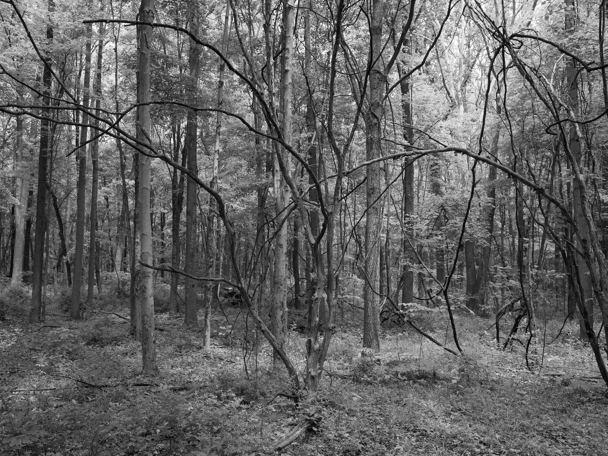
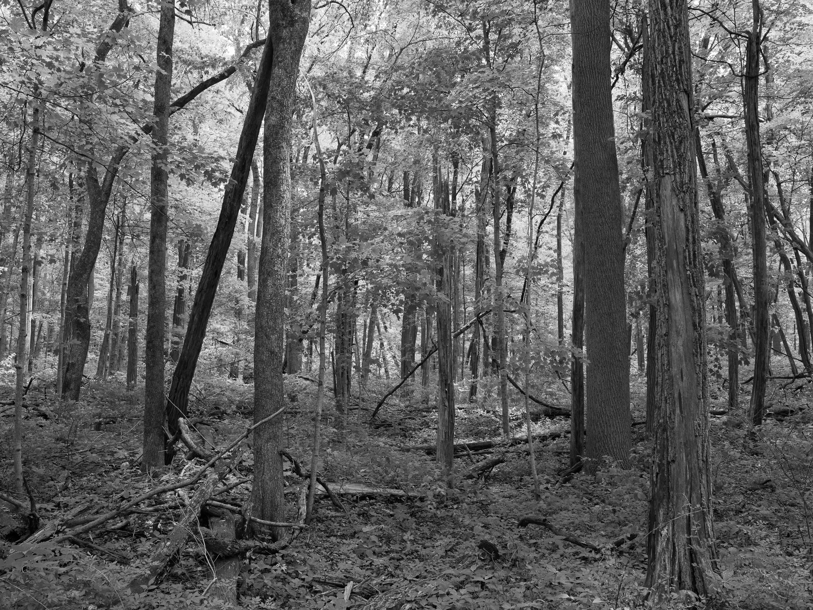
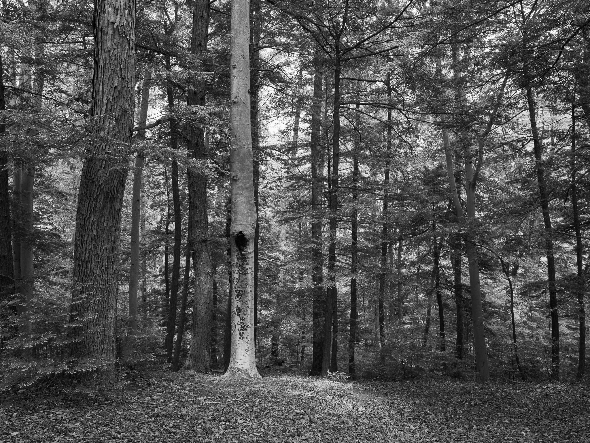
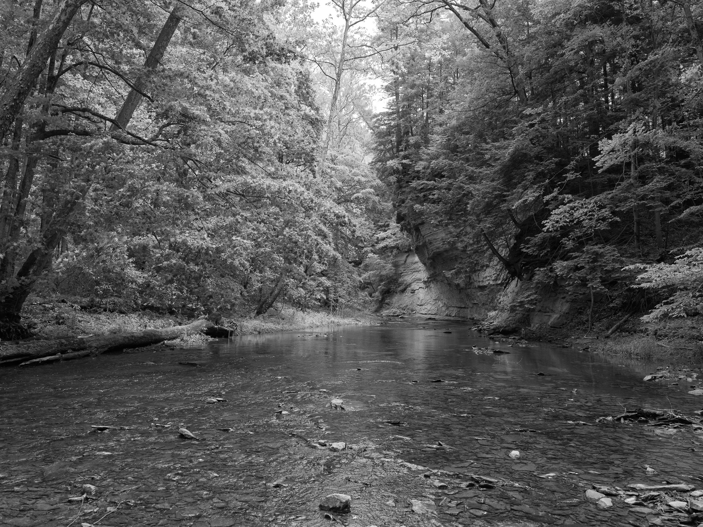
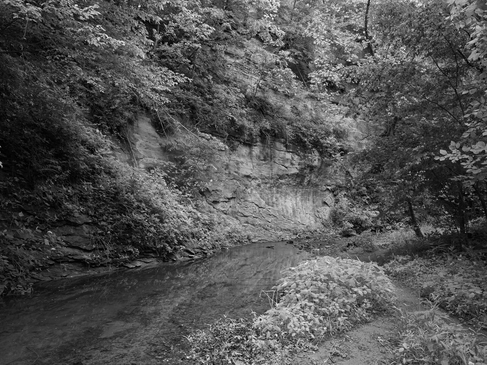
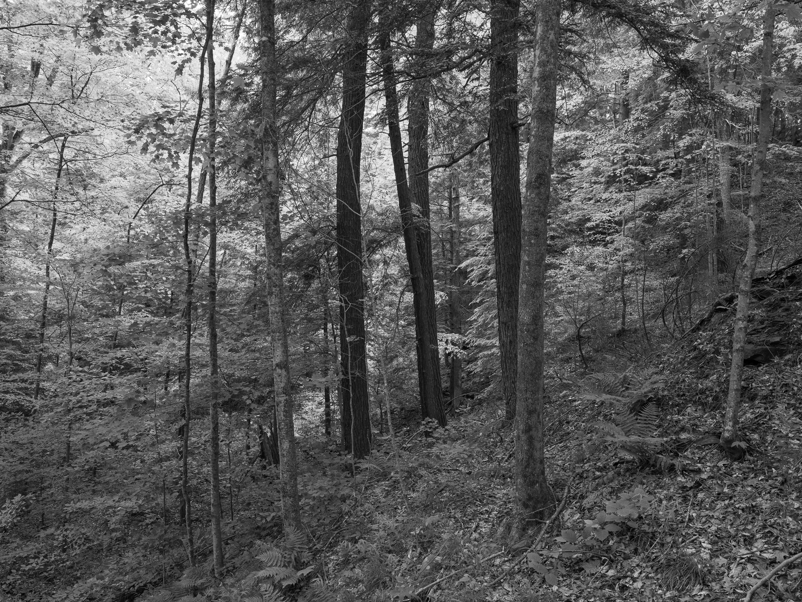

Public Lands Institute
Map
Archive
About
Pine Hills Nature Preserve
IN

Pine Hills Nature Preserve 1 · 2026-05-21
_DSF2289.jpg

Pine Hills Nature Preserve 2 · 2026-05-21
_DSF2291.jpg

Pine Hills Nature Preserve 3 · 2026-05-21
_DSF2294.jpg

Pine Hills Nature Preserve 4 · 2026-05-21
_DSF2316.jpg

Pine Hills Nature Preserve 5 · 2026-05-21
_DSF2322.jpg

Pine Hills Nature Preserve 6 · 2026-05-21
_DSF2327.jpg
View all 6 images →
← Mounds State Park
Prophetstown State Park →